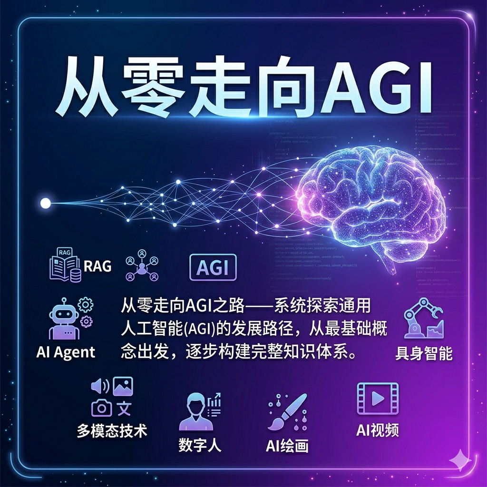
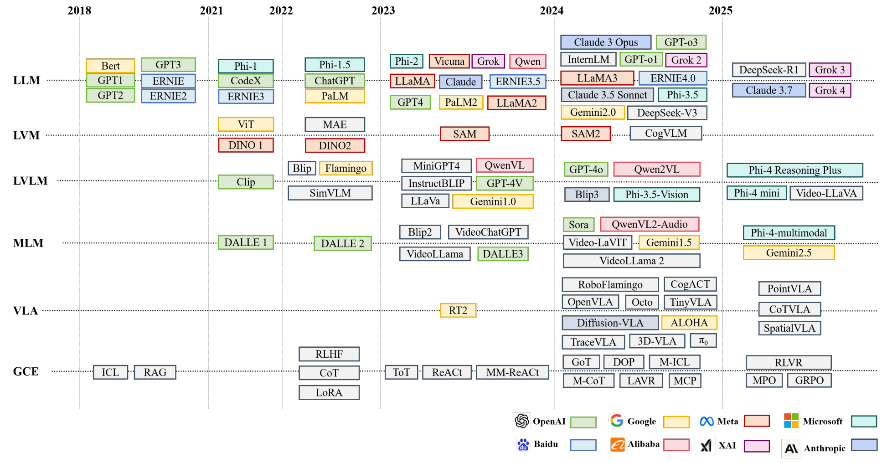
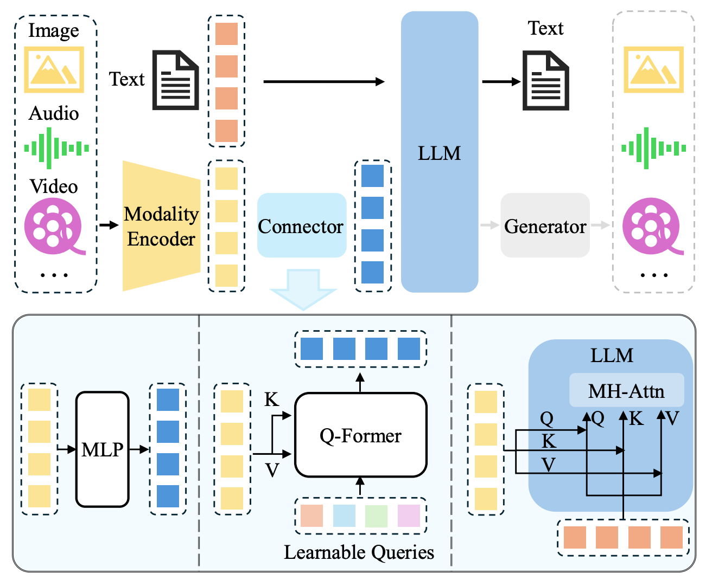

Project Mission
不是资讯堆叠，而是一条可复用的成长路径
这里记录的是从概念入门到工程落地的真实学习轨迹：理解模型原理，拆解系统架构，完成项目实践，并逐步建立面向 AGI 的认知框架。
路线方法
从基础到系统，从工具到智能
基础知识
围绕 AI 入门、计算机视觉、NLP 与预备知识，建立统一的术语、模型与问题意识。
工程实践
从 Transformer 到小型文生视频，再到与机器人控制相关的系统实验，把理解落到代码与工程组织上。
认知升级
将大模型、多模态、Agent、部署与具身智能串联起来，形成持续迭代的 AGI 探索框架。
内容气质
克制、专业、持续研究
不追短期热点堆砌，更强调知识结构与长期沉淀。
适用对象
学习者 / 开发者 / 研究探索者
适合建立个人技术路径，也适合作为持续演进的项目主页。

Knowledge Map
从零迈向 AGI 的核心路径
将零散知识重组成一张可连续前进的路线图，让学习顺序、工程实践和认知升级彼此对齐。
基础认知
建立 AI、AGI、编程与问题建模的基础视角，形成后续深入学习的共同语言。
AI 入门
预备知识
问题意识
查看模块
机器学习
从数据、特征、优化与学习范式出发，补足理解大模型之前的统计学习与训练直觉。
监督学习
优化
训练直觉
查看路线
深度学习
通过视觉检测与从零实现模型项目，进入网络结构、训练循环与工程实现层面的真实语境。
YOLO
PyTorch
训练循环
查看模块
大语言模型
围绕 Transformer、位置编码、RLHF 与从零训练 demo，深入理解 LLM 的核心机制。
Transformer
RLHF
Position Encoding
查看模块
多模态
把文本、图像、视频放进统一视野中，理解感知、对齐与跨模态生成的核心逻辑。
MLLM
图像理解
视频生成
查看模块
Agent / RAG / MCP
从检索增强到工具调用与多智能体协作，进入 AI 系统真正开始具备行动性的阶段。
Agent
RAG
MCP
查看模块
系统部署
关注推理部署、架构拆分、并行策略与工程可用性，让模型从 demo 走向真实系统。
推理部署
并行策略
系统工程
查看模块
AGI / 具身智能
从更高层认知与物理世界交互的角度，理解智能体、环境与任务之间的长期演化关系。
AGI 认知
Embodied AI
长期主义
查看模块
Research Assets
研究图谱与认知资产
除了课程与文章，这个工程也持续沉淀时间线、结构图和技术图谱，让知识不止停留在文字层，而是能被更快复盘、比较和复用。
- 大模型技术时间线，帮助建立演进视角。
- 多模态架构图，帮助快速把握系统组成。
- 图谱、项目与文档并行沉淀，形成可长期扩展的知识资产。
Timeline
大模型演进时间线

Architecture
多模态系统架构图

Knowledge Planet
知识星球 · AI 前沿精选
把前沿动态、深度研报与实战落地方法，收束成一条可快速吸收的精选流。
Curated Signal
AI 前沿精选 · 知识星球
2026 年 Q1 · 内容精华汇总
Why Join
加入知识星球，你将收获什么
Engineering Practice
从原理走向代码，从代码走向系统
这里不是抽象的概念展示，而是把训练、生成与部署拆进真实工程，沉淀成可继续迭代的项目样例。
From-Zero-to-Transformer
基于 PyTorch 的从零训练示例，覆盖 Transformer 结构理解、训练循环、样本数据与生成过程。
PyTorch
51M Demo
LLM Training
查看项目
From-Zero-to-small-T2V
围绕文生视频的轻量实验，聚焦 GAN 架构、数据生成逻辑与视频生成路径的工程化理解。
GAN
Text-to-Video
Synthetic Data
查看项目
From-Zero-to-OpenClaw
结合 Docker、启动配置与系统集成，体现面向机器人控制与具身方向的工程实践取向。
Docker
Embodied
System Integration
查看项目
About
关于作者
猫先生，持续进行 AI/AGI 方向的知识整理、工程实践与方法论沉淀。魔方AI空间专注于构建面向长期主义的技术学习坐标系。
Organization

魔方AI空间
面向长期主义的 AI 技术学习与探索空间。关注的不只是模型本身，也包括系统工程、实践方法、知识组织方式，以及通向 AGI 的持续研究路径。